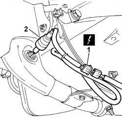

1080B95 rear lambda probe with catalitic converter r r
- Path
- Procedures > 10 ENGINE UNIT > 1080 EXHAUST EMISSION CONTROL SYSTEM > 1080B exhaust emission control system > 1080B95 rear lambda probe with catalitic converter r r
- Kind
- repair procedure (removal / refitting; the operation number is the code)
- Applies to
- engines: 1.1, 1.2 8v; all production periods
- Interactive page
- https://sloeber94.github.io/elrnDB-fPnd/en/#/2752518
Applies to: engines: 1.1; all production periods
 Removing
Removing
 Refitting
RefittingRaise the car.
1. Disconnect the electrical connection for the rear Lambda sensor.
 | Name | Connector |
|---|---|---|
1 | Lambda sensor on catalyzer | K17 |
2. Undo the rear Lambda sensor and remove it from the housing in the catalyzer.

Applies to: engines: 1.2 8v; all production periods
Removing
RefittingRaise the car.
1. Disconnect the electrical connection for the rear Lambda sensor.
| Name | Connector |
|---|---|---|
1 | Lambda sensor on catalyzer | K17 |
2. Undo the rear Lambda sensor and remove it from the housing in the catalyzer.
Applies to: engines: 1.1; all production periods
Refitting
RemovingTighten the rear Lambda sensor in place on the catalyzer and connect the electrical connection.
| Name | Connector |
|---|---|---|
- | Lambda sensor on catalyzer | K17 |
Lower the vehicle.
Applies to: engines: 1.2 8v; all production periods
Refitting
RemovingTighten the rear Lambda sensor in the housing on the catalyzer and connect the electrical connection.
| Name | Connector |
|---|---|---|
- | Lambda sensor on catalyzer | K17 |
Lower the vehicle.